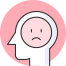

-
1회기
왜 우리 아이에게
이런 일이 생겼을까요? -
2회기
학교폭력
대응방법 알기 -
3회기
예방과 재발
방지하기 -

4회기
부모는 무엇을 해야 할까요?
- 시작하기
- 첫째,
나도 괜찮은 부모 - 둘째,
나의 지원부대 - 셋째,
Action Plan! (활동계획) - 정리하기
TIP. 학교폭력관련 전문적인 도움이 필요할 때
학교폭력 상담 · 신고기관
| 기관명 | 연락처 | 이용방법 |
|---|---|---|
| 전국 청소년상담복지센터 | 전국 청소년상담복지센터 참고 | 지역별 상담복지센터 안내 메뉴에서 거주 지역 센터 연락처 찾기 |
| 청소년사이버상담센터 | cyber1388.kr | 365일 24시간 사이버상담 |
| 청소년상담전화 | 1388 | · 전화 : 1388 365일 24시간 전화상담 운영 |
| 안전Dream 117학교폭력신고센터 |
117 www.safe182.go.kr |
· 전화 : 국번 없이 117 · 홈페이지: 게시판, 실시간 1:1상담 · 문자 : #117 · 어플 : 117Chat |
| 학교폭력SOS지원단 (청소년폭력예방재단) |
1588-9128 www.jikim.net |
상담전화 평일 09:00~20:00 토요일 09:00~13:00 |
| Wee센터 | wee.go.kr | 지역별 Wee센터 안내 |
| [부모교육]건강가정지원센터 | www.familynet.or.kr | 지역별 건강가정지원센터 안내 |
| [법률]대한법률구조공단 |
132 www.klac.or.kr |
· 전화 : 132 사이버상담, 방문상담예약 |
정부부처 피해학생 지원체계
| 교육부 |
1. 피해학생, 가족대상 치유 지원 프로그램(우리아이 행복프로젝트) - 우리 아이 행복 프로젝트 : 찾아가는 상담⋅치료 서비스 (위로상담, 멘토링, 체험캠프) 2. 학교폭력 피해학생 보호⋅상담⋅치유를 위한 전국 단위 기숙형 위탁기관- 해맑음 센터 운영(2016년 3월~) 3. 교육부-문체부, 교육부-GS칼텍스 협력 문화예술 치유지원 사업- 체험캠프, 미술⋅음악⋅무용 활동 치유 프로그램 - 문체부 협력 : 가정형 위센터, 위스쿨 등 - GS칼텍스 협력 : 55교에 문화예술치유 지원, 문화예술치유 연구학교 2교(서울1, 경기1) - 문화예술치유 캠프(초등 대상) |
|---|---|
| 법무부 |
- 대한법률구조공단, 법률홈닥터를 통한 피해학생 무료법률복지서비스 및 스마일센터를 통한 심리치유 서비스 제공 - 대한법률구조공단(72개), 법률홈닥터(40개), 지역별 범죄피해자 통합지원 네트워크(58개), 스마일센터(8개) 등 전국적인 피해지원 서비스 체계 구축 및 지원 1. 대한법률구조공단을 통한 피해학생 무료 법률상담 및 법률구조 서비스 지원2. 법무부 채용, 지자체⋅사회복지협의회에 배치한 ‘법률홈닥터’가 피해학생 무료법률상담 3. 강력범죄피해자 심리치유 전문시설 ‘스마일센터’를 통한 피해학생 무료 심리치유서비스 - 스마일센터(전국 8개)의 심리지원 |
| 보건복지부 |
1. 5개 국립병원 내 ‘아동청소년정신건강증진센터’ 설치, 운영 - 학교폭력으로 인한 피해자 심리적 충격(PTSD, 우울증 등), 가해자 정서적 문제에 대한 전문적 치료 프로그램 제공 - 희망품교실(서울), 학교폭력치유표준선도프로그램(공주, 나주), 드림스쿨(춘천, 학교폭력예방연극제), 학교폭력예방 및 정신건강증진프로그램 운영 2. 기초 정신건강증진센터(130개소)에 아동청소년 전담인력 배치- 심리상담 및 프로그램, 사례관리 제공 - 병원연계 및 의료비 지원 |
| 여성가족부 |
1. 국립중앙청소년디딤센터 운영 - 정서행동장애 청소년 대상 치료재활 서비스 제공 - 정서, 불안, 신체화 문제 등 내재화 영역과 ADHD, 반항행동, 품행문제 등 외현화 문제 2. 성폭행 피해 학생 및 가족에 대한 지원- 해바라기 센터 : 피해자에 대한 수사⋅법률⋅의료⋅심리치료 등 통합적 지원 <기타>• KT텔레캅은 교육부와 MOU를 체결, 학생들에게 ‘학교폭력 피해학생 신변보호 서비스’ 제공 |
 본 프로그램은 사정에 따라 변경될 수 있으니 자세한 사항은 해당 부처 홈페이지에서 확인하시기 바랍니다.
본 프로그램은 사정에 따라 변경될 수 있으니 자세한 사항은 해당 부처 홈페이지에서 확인하시기 바랍니다.